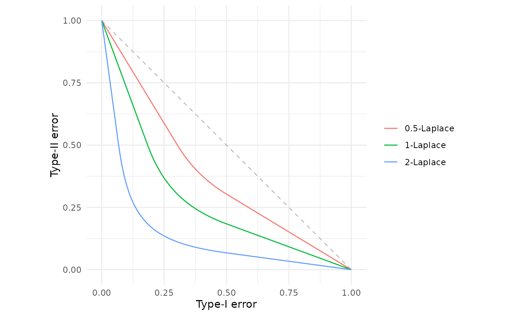
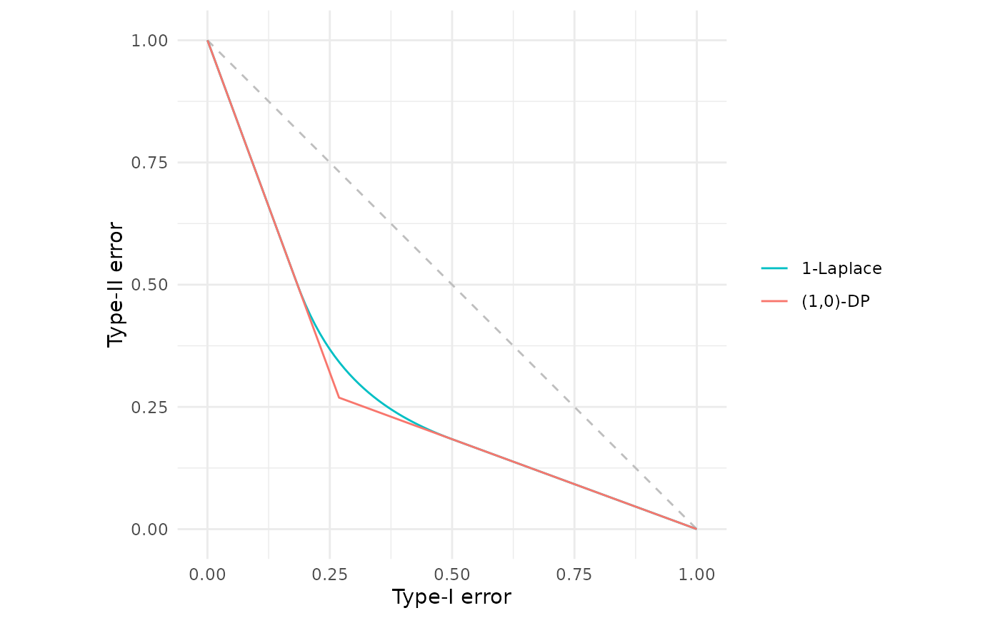
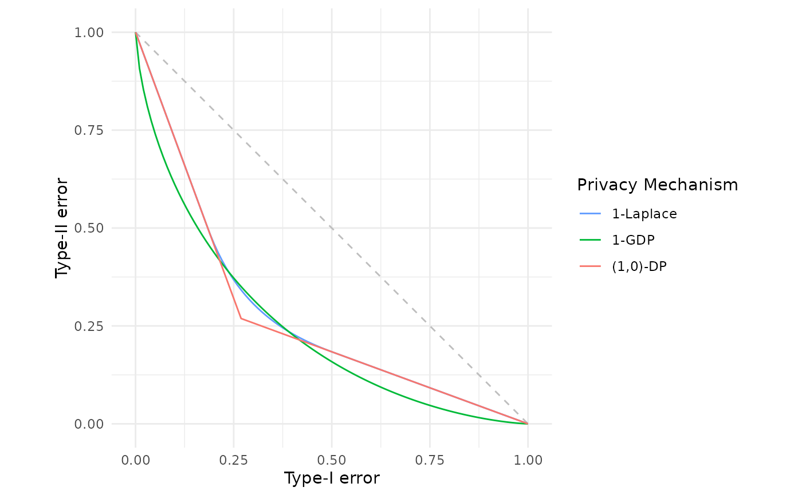

Constructs the trade-off function corresponding to \(\mu\)-Laplace differential privacy. This corresponds to a randomised algorithm based on Laplace (double exponential) noise, which is the canonical mechanism in the original differential privacy framework (Dwork et al., 2006).
Value
A function of class c("fdp_lap_tradeoff", "function") that computes the \(\mu\)-Laplace DP trade-off function.
When called:
Without arguments: Returns a data frame with columns
alphaandbetacontaining the skeleton points of the trade-off function.With an
alphaargument: Returns a data frame with columnsalphaandbetacontaining the Type-II error values corresponding to the specified Type-I error rates.
Details
Creates a \(\mu\)-Laplace differential privacy trade-off function for use in f-DP analysis and visualisation. If you would like a reminder of the formal definition of \(\mu\)-Laplace DP, please see further down this documentation page in the "Formal definition" Section.
The function returns a closure that stores the \(\mu\) parameter in its environment. This function can be called with or without argument supplied, either to obtain points on a canonical grid or particular Type-II error rates for given Type-I errors respectively.
Formal definition
Laplace differential privacy arises as the trade-off function corresponding to distinguishing between two Laplace distributions with unit scale parameter and locations differing by \(\mu\). Without loss of generality, the trade-off function is therefore, $$L_\mu := T\left(\text{Lap}(0, 1), \text{Lap}(\mu, 1)\right) \quad\text{for}\quad \mu \ge 0.$$
The most natural way to satisfy \(\mu\)-Laplace DP is by adding Laplace noise to construct the randomised algorithm. This is the canonical noise mechanism used in classical \(\varepsilon\)-differential privacy. Let \(\theta(S)\) be the statistic of the data \(S\) which is to be released. Then the Laplace mechanism is defined to be $$M(S) := \theta(S) + \eta$$ where \(\eta \sim \text{Lap}(0, \Delta(\theta) / \mu)\) and, $$\Delta(\theta) := \sup_{S, S'} |\theta(S) - \theta(S')|$$ the supremum being taken over neighbouring data sets. The randomised algorithm \(M(\cdot)\) is then a \(\mu\)-Laplace DP release of \(\theta(S)\). In the classical regime, this corresponds to the Laplace mechanism which satisfies \((\varepsilon=\mu)\)-differential privacy (Dwork et al., 2006).
More generally, any mechanism \(M(\cdot)\) satisfies \(\mu\)-Laplace DP if, $$T\left(M(S), M(S')\right) \ge L_\mu$$ for all neighbouring data sets \(S, S'\).
In the f-differential privacy framework, the canonical noise mechanism is Gaussian (see gdp()), but \(\mu\)-Laplace DP does arise as the trade-off function in the limit of the group privacy of \(\varepsilon\)-DP as the group size goes to infinity (see Proposition 7, Dong et al., 2022).
References
Dong, J., Roth, A. and Su, W.J. (2022). “Gaussian Differential Privacy”. Journal of the Royal Statistical Society Series B, 84(1), 3–37. doi:10.1111/rssb.12454 .
Dwork, C., McSherry, F., Nissim, K. and Smith, A. (2006) “Calibrating Noise to Sensitivity in Private Data Analysis”. In: Theory of Cryptography, 265–284. doi:10.1007/11681878_14 .
See also
fdp() for plotting trade-off functions.
Additional trade-off functions can be found in
gdp() for Gaussian differential privacy, and in
epsdelta() for classical \((\varepsilon, \delta)\)-differential privacy.
Examples
# Laplace DP with mu = 1
lap_1 <- lap(1.0)
lap_1
#> Laplace Differential Privacy Trade-off Function
#> Parameters:
#> μ = 1
lap_1() # View points on the canonical grid
#> alpha beta
#> 1 0.0000000 1.0000000
#> 2 0.1839397 0.5000000
#> 3 0.1900000 0.4840519
#> 4 0.2000000 0.4598493
#> 5 0.2100000 0.4379517
#> 6 0.2200000 0.4180448
#> 7 0.2300000 0.3998690
#> 8 0.2400000 0.3832078
#> 9 0.2500000 0.3678794
#> 10 0.2600000 0.3537302
#> 11 0.2700000 0.3406291
#> 12 0.2800000 0.3284638
#> 13 0.2900000 0.3171374
#> 14 0.3000000 0.3065662
#> 15 0.3100000 0.2966770
#> 16 0.3200000 0.2874058
#> 17 0.3300000 0.2786965
#> 18 0.3400000 0.2704996
#> 19 0.3500000 0.2627710
#> 20 0.3600000 0.2554718
#> 21 0.3700000 0.2485672
#> 22 0.3800000 0.2420259
#> 23 0.3900000 0.2358202
#> 24 0.4000000 0.2299247
#> 25 0.4100000 0.2243167
#> 26 0.4200000 0.2189759
#> 27 0.4300000 0.2138834
#> 28 0.4400000 0.2090224
#> 29 0.4500000 0.2043775
#> 30 0.4600000 0.1999345
#> 31 0.4700000 0.1956806
#> 32 0.4800000 0.1916039
#> 33 0.4900000 0.1876936
#> 34 0.5000000 0.1839397
#> 35 1.0000000 0.0000000
# Plot and compare different mu values
fdp(lap(0.5),
lap(1.0),
lap(2.0))

# Notice that (epsilon=1)-differential privacy is indeed 1-Laplace DP
# The gap between the lines is the inefficiency in the privacy
# characterisation of classical differential privacy
fdp(lap(1),
epsdelta(1))

# Compare Laplace DP with Gaussian DP and classical (epsilon, delta)-DP
fdp(lap(1.0),
gdp(1.0),
epsdelta(1.0),
.legend = "Privacy Mechanism")
